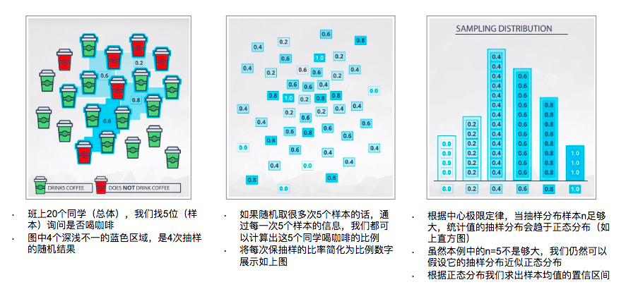

39. 小样本假设检验 - 自助法
对于小样本，我们还有另外一种处理方法 —— 自助法（bootstrap）。
在统计学中，自助法是一种从给定训练集中有放回的均匀抽样，也就是说，每当选中一个样本，它等可能地被再次选中并被再次添加到训练集中。
Bootstrap步骤
-
在原有的样本（比如我们有20个同学，这些同学有的喝咖啡，有的不喝）中通过重抽样抽取一定数量（5人）的新样本，重抽样（Re-sample）的意思就是有放回的抽取，即一个数据有可以被重复抽取超过一次。
-
基于产生的新样本，计算我们需要估计的统计量。在这个例子中，也就是喝咖啡的人的比例。
-
重复上述步骤 n 次（一般是n>1000次）。在这个例子中，通过 n 次（假设 n=1000），我们就可以得到1000个比例。
-
最后，我们可以计算被估计量的均值和方差。

通过Bootstrap方法我们不仅可以估计喝咖啡人数的比例（ 这点普通方法也可以很容易做到），还可以估计这个比例的方差。这可是只利用原有的样本进行一次估计所做不到的。
而本质上，Bootstrap方法，是将一次的估计过程，重复上千次上万次，从而便得到了得到上千个甚至上万个的估计值，于是利用这不止一个的估计值，我们就可以估计除了均值以外的其他统计量：比如标准差、中位数等。通过这些统计量的估计可以构造置信区间等，并将这些统计量与我们的假设进行对比，通过这种方式我们也可以确定是否拒绝零假设。
- 自助法可以作为推论技巧的原因，更多注释可以参见 这里 。